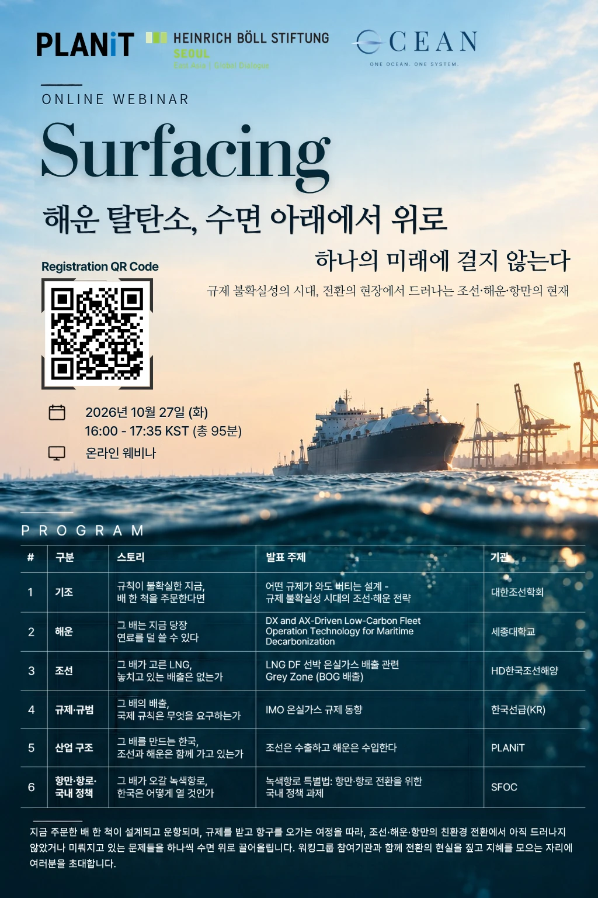

01규제 일정
공통 인식
2050년 넷제로 목표에는 공감하지만, 대응이 지연될수록 전환 부담은 커진다.
견해 차이
전환 착수 시점목표 이행 방식
SURFACING · HEINRICH BÖLL STIFTUNG × PLANiT · WEBINAR
해운 탈탄소, 수면 아래에서 위로
하나의 미래에 걸지 않는다
규제 불확실성의 시대, 전환의 현장에서 드러나는 조선·해운·항만의 현재
이번 페이지에는 발표 자료와 함께 웨비나에서 논의된 핵심 인사이트를 정리했습니다.

Six Talks
지금 주문한 배 한 척이 설계되고 운항되며, 규제를 받고 항구를 오가는 여정을 따라 여섯 발표를 엮었습니다. 발표를 누르면 핵심 내용과 남은 질문, 이어 볼 자료가 열립니다.
발표 자료는 연사 기관의 공유 동의를 받은 3건(한국선급, PLANiT, 기후솔루션)만 내려받을 수 있습니다. 외부 재배포는 삼가 주시고, 인용하실 때는 기관과 발표자를 출처로 밝혀 주세요.
Insight
여섯 발표는 해운 탈탄소화가 특정 산업이나 기술만으로 해결할 수 없는 공동의 과제임을 보여주었습니다. 네 가지 핵심 쟁점을 중심으로 발표자들의 공통 인식과 견해 차이를 정리했습니다.
공통 인식
2050년 넷제로 목표에는 공감하지만, 대응이 지연될수록 전환 부담은 커진다.
견해 차이
공통 인식
개별 선사의 노력만으로는 장기적인 전환 비용과 위험을 감당하기 어렵다.
견해 차이
공통 인식
선박 운항 최적화를 위해서는 항만 데이터와 인프라의 연계가 필수적이다.
견해 차이
공통 인식
건조·정박 중 발생하는 BOG 배출 등 현행 규제가 포괄하지 못하는 영역이 존재한다.
견해 차이
더 궁금한 점은 메일로 남겨 주세요. contact@1-ocean.com